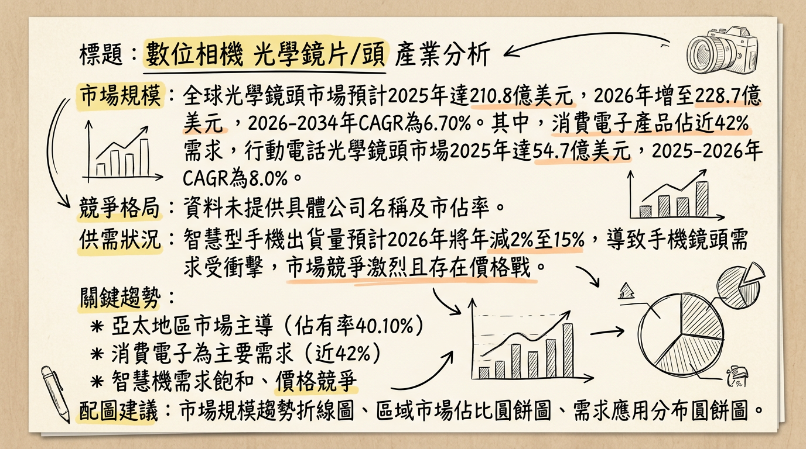
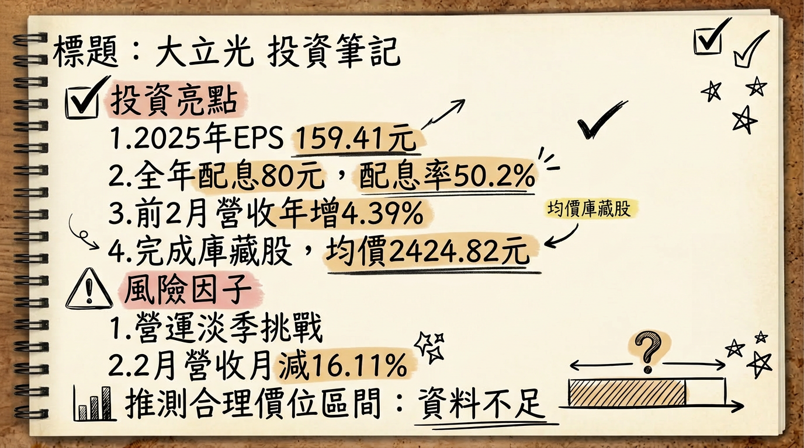

3008 大立光 深度研究報告
一句話摘要
全球高階手機鏡頭龍頭大立光，短期雖受淡季與記憶體漲價影響營運逆風，但憑藉其在可變光圈、潛望式等高階鏡頭的技術領先地位，以及在CPO、車載、機器人視覺等新興應用領域的積極佈局，有望在2026年下半年迎來營運反彈與成長新曲線。
公司概覽
大立光電股份有限公司（3008）是全球領先的光學鏡頭模組製造商，專精於研發、設計、生產及銷售各式光學鏡頭，特別在高階智慧型手機鏡頭市場具備統治性地位。
主要產品線與應用：
- 智慧型手機鏡頭： 涵蓋高畫素（1000萬畫素以上、2000萬畫素以上）、多片塑膠鏡片（7P、8P、9P）、潛望式鏡頭及近期導入的可變光圈鏡頭。
- 新興應用領域： 積極拓展車載鏡頭、AI眼鏡、摺疊機鏡頭、機器人視覺模組、以及共封裝光學（CPO, Co-Packaged Optics）等高潛力市場。
營收結構（按出貨量，2026年2月 / 2025年Q4 & 全年）：
| 產品項目 | 2026年2月佔比 | 2025年Q4 / 全年佔比 |
|---|
| 1000萬畫素以上鏡頭 | 約50%至60% | 約50%至60% |
| 2000萬畫素以上鏡頭 | 約10%至20% | 約10%至20% |
| 800萬畫素鏡頭 | 約0%至10% | 約10%以下 |
| 低於500萬畫素產品 | 約20%至30% | 約20%至30% (其他) |
主要位於台灣台中工業區，擁有10座自有廠房與2座租賃廠房。持續擴建新廠，其中一座最新自建廠房預計2025年9月底完工，規劃於2026年投產。另規劃在2025年設立另一座產能更大的新廠。
核心競爭優勢
技術領先地位： 在高階多片塑膠鏡片（7P、8P、9P）、潛望式鏡頭、以及即將量產的可變光圈鏡頭等高技術門檻產品領域，具備業界領先的設計與製造能力。
獨特的良率與製程優勢： 大立光在高階鏡頭的生產良率遠超競爭對手，使其能獲得主要客戶的高階訂單並維持較高的毛利率。複雜製程一貫化集中，有助提升競爭力。
主要客戶關係： 深度綁定全球一線智慧型手機品牌，尤其是在新一代iPhone高階鏡頭的供應鏈中扮演關鍵角色。
積極佈局新興技術： 提前投入CPO、車載、機器人視覺等新領域的研發與佈局，為未來營運增添多元成長動能。
財務分析
月營收趨勢
| 月份 | 金額 (新台幣億元) | 月增率 MoM | 年增率 YoY |
|---|
| 2026年2月 | 46.13 | -16.11% | -2.61% |
| 2026年1月 | 54.99 | -2.10% (估) | +11.14% |
| 2025年12月 | 56.17 | +6.00% | 0.00% |
| 2025年11月 | 53.03 | -15.30% | -11.84% |
| 2025年10月 | 未提供 | 未提供 | 未提供 |
| 2025年9月 | 未提供 | 未提供 | 未提供 |
季度數據 (2025年第四季)
- 季營收： 新台幣 172.19 億元 (季減 3%，年減 5%)
- 毛利率： 47.8% (較上季微幅增加，但未達五成以上水準)
- 稅後淨利： 新台幣 67.27 億元
- EPS： 新台幣 50.40 元
年度趨勢
| 年度 | 營收 (新台幣億元) | 年增率 | 稅後淨利 (新台幣億元) | 年增率 | EPS (新台幣元) |
|---|
| 2024 | 594.57 | +22% | 259.15 | +44.75% | 194.17 |
| 2025 | 611.48 | +3% | 212.82 | -18% | 159.46 |
| 2025 (預估中位數) | - | - | - | - | 156.99 (區間 151.43-161.30) |
| 2026 (預估中位數) | - | - | - | - | 178.60 (區間 155.36-199.94) |
法說會重點 (2026年01月08日)
- 2026年第一季展望： 管理層預期拉貨動能將逐月下滑，主要受傳統淡季及記憶體漲價壓抑手機升級趨勢影響，產能利用率相對不緊湊。
- 產品組合 (2025年Q4 & 全年按出貨量)： 2000萬畫素以上佔10-20%；1000萬畫素佔50-60%；800萬畫素佔10%以下；500萬畫素以下佔20-30%。
- 可變光圈鏡頭： 證實將於2026年第三季開始出貨，生產難度高於潛望式鏡頭，檢測工站多，初期良率與毛利率仍待觀察。
- 摺疊式手機鏡頭： 預計2026年年底會有相關產品出貨。
- 機器人相關光學模組： 已有少量出貨，因客戶調整設計而遞延至2026年。
- CPO (Co-Packaged Optics)： 公司已投入內部資源進行相關產品研發，視為手機鏡頭以外的重要新業務佈局。
- 產能利用率： 董事長林恩平表示，產能是滿的，但非因客戶訂單量上升，而是製程更複雜。
- 資本支出 (2025年Q4)： 約21.8億元。
- 折舊 (2025年Q4)： 約20.8億元。
- 記憶體漲價影響： 記憶體價格上漲導致部分中小型客戶對成本更敏感，可能延後鏡頭升級計畫；大客戶升級趨勢不受影響。
券商觀點
以下為部分券商對大立光的目標價與評等：
| 券商名稱 | 日期 | 目標價 (新台幣元) | 評等 |
|---|
| 美系外資 | 2026年01月05日 | 3549 | 買進 |
| 富邦證券 | 2026年01月08日 | 2630 | - |
| 兆豐證券 | 2026年01月09日 | 3350 | 買進 (由中立調升) |
| 高盛證券 | 2025年10月13日 | 3644 (過時) | 買進 |
| 中信投顧 | 2025年10月13日 | - | 增加持股 (過時) |
- FactSet (綜合分析師預估，2026年01月08日)：
* 2025年 EPS 預估中位數：156.99 元 (區間：151.43 元至 161.30 元)
* 2026年 EPS 預估中位數：178.60 元 (區間：155.36 元至 199.94 元)
- CMoney (彙整多數券商，2026年01月09日)：
* 2025年 EPS 預估區間：157.62 元至 160.94 元
* 2026年 EPS 預估區間：175.2 元至 195.03 元
財報深度分析
利潤率趨勢
| 季度 | 營收 (億元) | 毛利率 (%) | 稅後淨利 (億元) | EPS (元) |
|---|
| 2024Q4 | 182.09 | 59.1 | 86.75 | 65.01 |
| 2025Q1 | - | - | - | - |
| 2025Q2 | - | - | - | - |
| 2025Q3 | - | - | - | - |
| 2025Q4 | 172.19 | 47.8 | 67.27 | 50.40 |
- 2024年第四季利潤率優於預期： 主要受惠於客戶給予的「出貨獎金」、產品組合優化以及匯兌利益與利息收入等業外收益。
- 2025年獲利衰退： 儘管營收成長3%，但全年稅後淨利年減18%，主因毛利率波動。2025年第四季毛利率僅47.8%，未能回到過往五成以上水準。
- 2025年第四季毛利率受壓： 部分產品報廢成本較高，新產品開模與初期生產效率不佳，加上高階潛望式鏡頭良率提升速度不如預期，以及記憶體價格上漲導致部分客戶延後鏡頭升級，均壓抑獲利表現。
- 產品組合影響： 2025年第四季1000萬畫素產品仍是主流（佔50-60%），2000萬畫素以上高階產品佔比僅10-20%，顯示高階產品放量速度受市場需求牽動。
- 機種碎片化： 客戶開案數量多但單一機種量偏低，導致產線頻繁切換及稼動率低，影響毛利率。
存貨分析
* 2024年第四季：69.04天
* 2025年第一季：82.33天
* 2025年第二季：118.99天
* 2025年第三季：75.5天
* 2025年第四季：72.41天
* 趨勢： 2025年第二季存貨週轉天數顯著上升，後續兩季雖有下降但仍高於2024年第四季水準。公司會為支持客戶而維持安全庫存，產生例行性報廢損失，顯示有策略性備料。
* 2024年第四季：60.13天
* 2025年第一季：62.42天
* 2025年第二季：63.84天
* 2025年第三季：45.73天
* 2025年第四季：56.78天
* 趨勢： 2025年應收帳款週轉天數波動較大，第三季收現速度較快。
資本支出與折舊
* 2024年：107億元 (年增25%，創歷史新高)
* 2025年：預估突破130億元 (年增逾25%)
* 趨勢： 資本支出連續兩年突破百億元，顯示公司積極投入擴產與技術升級。
* 最新第四廠已規劃一個樓層，擴產重心在更複雜的製程，主要因應iPhone新機需求及CPO業務佈局。
* 2025Q1：折舊 1,716,698，攤銷 55,209
* 2025Q2：折舊 1,788,543，攤銷 58,187
* 2025Q3：折舊 1,914,877，攤銷 56,035
* 2025Q4：折舊 2,090,537，攤銷 51,944
* 趨勢： 折舊費用在2025年呈現逐季增長，反映廠房設備投資持續投入。
股權異動
- 董監事/大股東申報轉讓： 未找到2024-2026年最新資料。
- 庫藏股買回紀錄：
*
計畫： 於2026年1月8日宣布啟動史上最大規模庫藏股計畫，預計買回2,670張股票。
* 區間價格： 1,600元至3,200元。
* 最高投入金額： 1,796.6億元。
* 目的： 提振市場信心，因本益比處於光學族群低檔，亦可能為轉型訊號。
* 執行進度： 截至2026年2月1日，已斥資64.74億元買回2,670張股票，執行率100%，平均每股買回價格為2,424.82元。
- 可轉換公司債 (CB) / 增減資： 未找到2024-2026年最新資料。
- 股利政策：
*
2024年： 全年現金股利約97.5元。
* 2025年：
* 上半年：現金股利28元 (已於2025年8月14日除權息)。
* 下半年：擬配發現金股利52元。
* 全年總計：現金股利80元，配息率約50.2%。
* 除息基準日：2026年3月26日。
* 現金股利發放日：2026年4月16日。
產業分析
市場規模與趨勢
* 預計2025年達210.8億美元，2026年增長至228.7億美元，2026-2034年CAGR為6.70%。
* 另有報告預計2025年為97.8億美元，2026年達105億美元，2026-2035年CAGR為7.3%。
* 亞太地區在2025年將主導全球市場，佔有率達40.10%。
* 消費電子產品需求佔總需求近42%。
- 行動電話光學鏡頭市場： 預計從2025年54.7億美元增長到2026年59.1億美元，2025-2026年CAGR為8.0%。
- 供需狀況與挑戰：
*
智慧手機出貨量承壓： 受記憶體缺料及漲價影響，2026年全球智慧型手機出貨量恐從原先的正成長轉為年減2%，甚至擴大至10.1%或15%。
* 鏡頭數量下降趨勢： Omdia報告指出，2025年第二季度全球智慧型手機平均配備3.19個攝影鏡頭 (去年同期3.37個)，後置鏡頭數量減少，多鏡頭競爭時代結束，轉向高解析度 (5000萬像素主流)。
* 競爭加劇與價格戰： 市場競爭激烈，規格升級難以完全抵銷價格壓力，且智慧型手機市場飽和導致營收增長放緩。
- 產業平均毛利率： 大立光毛利率達48%，明顯高於同業玉晶光34%、亞光22%、先進光15%、今國光23%。顯示其在高階市場的定價權和技術優勢。
競爭格局
目前全球前5大手機鏡頭公司完整市佔率數據未全部提供。大立光在高精度相機鏡頭(行動與影像領域)佔有12%市場份額。主要競爭對手包括舜宇光學。
大立光 vs 台灣同業比較 (2025年)
| 公司名稱 | 股票代碼 | 營收規模 (新台幣億元) | 毛利率 (最新) | EPS (新台幣元) |
|---|
| 大立光 | 3008 | 611.48 | 48% | 159.46 |
| 玉晶光 | 3406 | - | 34% | - |
| 亞光 | 3019 | 264.4 | 22% | 6.6 |
| 先進光 | 3362 | 32.26 (1-3季) | 15% (2025 Q3) | -1.17 (1-3季) |
| 今國光 | 6209 | 36.52 | 23% | 0.49 (1-9月) |
- 大立光： 專注高階技術門檻產品 (多片塑膠鏡片、潛望式、可變光圈)，以良率與技術領先保持高階市場市佔率和毛利率。客戶主要為全球領先品牌。
- 舜宇光學： 持續推進產品結構升級，朝高端化發展，以提升毛利率和平均售價。手機鏡頭出貨量增長。
產業趨勢與機會/威脅
關鍵技術趨勢：
高解析度與多功能化鏡頭： 手機鏡頭向更高像素、更大光圈、更多片數（8P/9P）、潛望式、可變光圈發展。有利於技術領先者。
AI與光學技術整合： AI增強型行動攝影、AI眼鏡等應用，需要高性能光學鏡頭，並提升影像處理能力。
新興應用領域擴展： 車載鏡頭 (ADAS)、AR/VR、機器人視覺模組、CPO等，為光學產業帶來多元成長機會。
對大立光的機會：
- 高階手機鏡頭領先地位： 高畫素、多片數、潛望式、可變光圈趨勢強化其在高階市場的市佔率。
- 新興應用佈局： 車載、AI眼鏡、摺疊機、機器人視覺及CPO等，有望開創未來成長曲線。
- AI手機帶動換機潮： AI手機對高性能鏡頭的需求，可能帶動新一輪換機潮。
對大立光的威脅：
- 智慧型手機市場需求放緩： 全球手機出貨量面臨下行風險，影響整體鏡頭需求。
- 鏡頭數量下降趨勢： 手機平均搭載鏡頭數減少，即使單個規格提升，仍可能對總體出貨量造成壓力。
- 產業競爭加劇： 價格戰壓力可能侵蝕毛利率，尤其在中低階市場。
- 記憶體漲價： 手機成本上升，部分品牌廠可能降規或延後升級。
近期催化劑
利多事件：
- 2026年3月5日： 外資與投信買超，股價表現強勢。
- 2026年2月24日： 董事會通過2025年下半年配發52元現金股利，全年合計80元，顯示獲利回饋股東。
- 2026年2月2日： 庫藏股計畫完成，累計斥資64.74億元買回2,670張股票，平均買回價2,424.82元，展現公司對股價的信心。
- 2026年1月16日： 啟動千億級庫藏股計畫，上限高達1,796億元，市場解讀為公司對未來營運具信心或為轉型訊號。
- 2026年1月5日： 2025年全年營收達611.48億元，年增3%，創公司歷史紀錄。
- 2025年12月25日： 實施第二次庫藏股，買回區間價格1,600元至3,200元。
利空事件：
- 2026年3月6日： 公布2月營收46.13億元，月減16.11%，年減2.61%，表現不如預期。
- 2026年1月8日： 法說會上董事長林恩平對2026年第一季展望保守，預計拉貨動能將逐月下滑。
- 2026年1月5日： 2025年全年稅後淨利212.82億元，年減18%，EPS為159.46元，顯示營收增加但獲利承壓，主要受毛利率波動影響。
- 營運逆風： 傳統淡季、記憶體漲價導致手機廠成本壓力、部分客戶延後鏡頭升級計畫。
⭐ 成長動能時間軸
| 時間點 | 成長動能/事件 | 具體細節 |
|---|
| 2025年9月底 | 新廠完工 | 最新自建廠房預計完工。 |
| 2026年 | 新廠投產 | 2025年完工新廠規劃於2026年投產，用於支應需求，重心在更複雜製程，包含CPO產線(傳聞，公司否認相關報導)。 |
| 2026年Q1 | 手機市場短期回溫 | 3月拉貨動能預期優於2月，工作天數恢復正常。 |
| 2026年Q3 | 可變光圈鏡頭開始出貨 | 預計用於蘋果下半年旗艦iPhone 18系列，生產難度高，良率與毛利率影響待觀察。有望顯著提升平均銷售單價(ASP)。 |
| 2026年下半年 | iPhone 18 發表 | 市場預期蘋果新機將首度搭載可變光圈鏡頭，大立光為主要供應商，將帶動高階鏡頭出貨。 |
| 2026年 | 機器人視覺模組出貨 | 因客戶要求調整設計而遞延至2026年出貨，為公司新應用領域的重要佈局。 |
| 2026年年底 | 摺疊式手機鏡頭出貨 | 公司預計相關產品將於年底出貨，切入快速成長的摺疊機市場。 |
| 長期佈局 | CPO (Co-Packaged Optics) | 已投入內部資源研發，傳與台積電合作，提供CPO準直徑元件並送樣AMD。被視為跨入AI賽道，具長期想像空間。 |
| 長期佈局 | 車載鏡頭、AI眼鏡 | 持續佈局，受惠於電動車智能化與AI應用發展趨勢。 |
2026 展望
成長動能：
- 高階鏡頭升級趨勢： 智慧型手機對高解析度、多功能鏡頭需求不減，尤其可變光圈鏡頭於2026年第三季出貨，有望顯著拉高ASP，為營收與毛利率帶來正向貢獻。
- 新興應用開花結果： 機器人視覺模組、摺疊手機鏡頭預計於2026年出貨，車載鏡頭持續擴展，有助分散營收來源。
- CPO業務潛力： 作為跨足AI數據中心領域的關鍵佈局，CPO業務一旦成功商業化，將為大立光帶來巨大的長期成長空間與估值提升。
- 新廠產能挹注： 2025年完工的新廠將於2026年投產，為高階產品提供更充裕的生產彈性與效率。
- 法人預期： 資深專欄作家預估大立光2026年EPS有望達到188.42元，較2025年預期的156.68元增長20.26%。
風險：
- 智慧型手機市場不確定性： 記憶體價格上漲及總體經濟不明朗，可能導致手機出貨量持續承壓，進而影響整體鏡頭需求。
- 新產品良率與毛利率挑戰： 可變光圈等新產品初期生產良率、報廢成本及檢測工站增加，可能對短期毛利率造成壓力。
- 客戶集中度風險： 營收高度依賴單一或少數大客戶，其訂單動態對大立光影響顯著。
- 新業務發展進程： CPO等新業務從研發到商業化仍有較長路徑，實際營收貢獻時程與規模尚待驗證。
- 產業競爭與價格壓力： 儘管大立光在高階市場具優勢，但整體手機鏡頭市場仍面臨競爭與價格壓力。
投資結論
儘管大立光短期面臨智慧型手機市場需求放緩、記憶體漲價壓抑升級動能、以及新產品初期毛利率壓力等逆風，但作為光學鏡頭產業的技術領導者，其長期成長動能依然強勁。
高階鏡頭升級帶動ASP： 2026年下半年可變光圈鏡頭的量產出貨，尤其來自iPhone 18的訂單，將顯著提升大立光的產品ASP與毛利率，帶動營運谷底翻揚。
新興應用拓寬成長曲線： 在車載、AI眼鏡、摺疊機和機器人視覺等新領域的佈局，以及CPO業務的潛力，顯示公司積極尋求多元化成長引擎，降低對單一市場的依賴。
穩健的財務體質與股東回饋： 14%的低負債比率和積極的庫藏股計畫，展現公司強健的財務實力及對股東權益的重視，有助於穩定市場信心。
技術領先確保競爭優勢： 大立光在複雜光學設計與高良率製造上的核心競爭力，使其能在高階市場持續保持領先地位，並在產業逆風中展現韌性。
綜合考量短期挑戰與長期成長機會，以及券商的EPS預估和目標價區間，建議投資人可在市場修正時逢低佈局，等待2026年下半年高階鏡頭放量與新業務進展帶來的營運爆發。
目標價區間建議： 基於券商預估的2026年EPS中位數178.60元，並考量其在高階市場的獨佔性與新業務的成長潛力，給予適度溢價。參考市場給予20-22倍本益比，建議未來12-18個月的目標價區間為
新台幣 3572元 至 3929元。
本報告由 AI 自動產生，資料來源為公開網路資訊，僅供參考，不構成投資建議。產生時間：2026-03-09 22:01
📊 資訊卡

